The following example session with screenshots was carried out with an early NAPROCHE version programmed in SWI-Prolog, running under Suse-Linux and TeXmacs.
Start up the TeXmacs editor with the NAPROCHE plugin. The header line of TeXmacs will contain a "Proof-Checker" button. When pressed, it initiates proof checking of the current buffer.
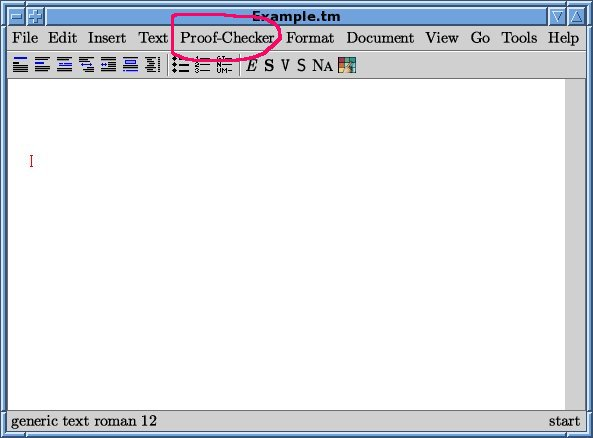
Plain text editing with TeXmacs proceeds in the usual way. The mathematical mode is obtained by typing a $-sign. Mathematical symbols like α can be entered by using the standard LaTeX commands and pressing <enter>. So ∖a l p h a and <enter> produces an α.
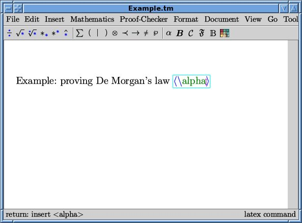
A logical "and" (∧) can typed as ∖w e d g e or obtained with one mouse-click from the symbol menues provided in the mathematical mode, in this case from the menue denoted by ℘ .
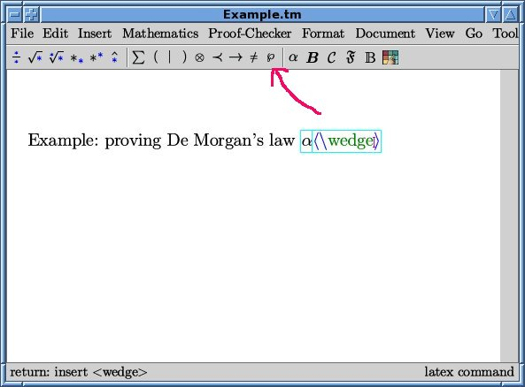
One can leave the mathematical mode by leaving the blue box around the mathematical text using the right-arrow keys (→) or by typing another $-sign.
The text typed so far is treated as a comment by the proof-checker. Only text in the quotation environment is proof-checked. The quotation environment is available by typing <\quotation> (i.e., ∖q u o t a t i o n <enter>), or by using the menues Text > Environment > Quotation. Writing inside the quotation environment is possible just like outside.
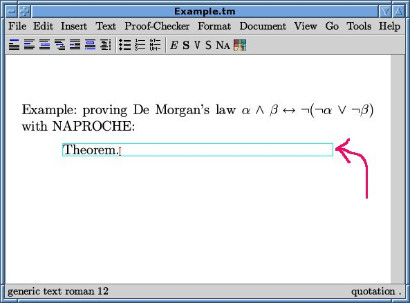
There are various editing tools like copying text by marking it with the mouse and pasting it by ctrl-y or by klicking the middle mouse button.
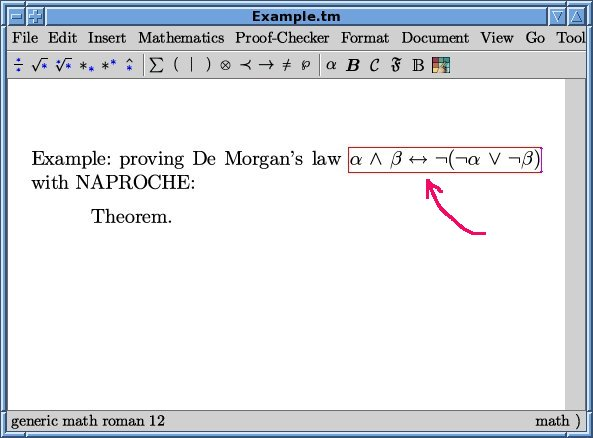
The proof of the De Morgan equivalence proceeds in the standard way. Assume the left-hand side of the equivalence in order to obtain the right-hand side. A proof by contradiction may be initiated by "Assume for a contradiction that". Assumptions can be freely introduced in a proof. Note that the status line usually shows the internal state of the editor.
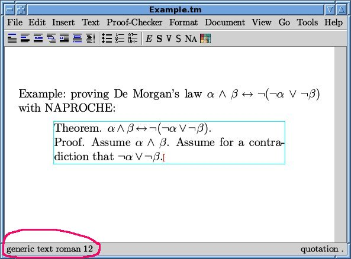
The status line is also used by the NAPROCHE system for the two possible messages of the checker: "The proof is accepted" and "The proof is NOT accepted". So if one presses the Proof-Checker button now, the proof will be accepted, since the proof so far only consisted of the introduction of assumptions.
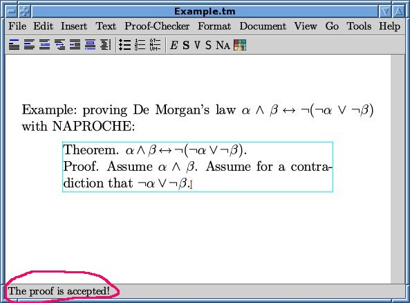
If we introduce an (orthographical) mistake into the proof like starting a sentence with a small letter, the proof checker rejects the proof.
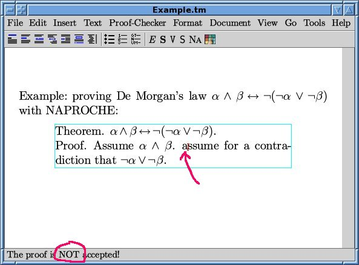
So we correct the spelling mistake and continue the proof by assuming ¬α. Then α can be deduced from the assumption α∧β, and a contradiction can be deduced from the ¬α and α.
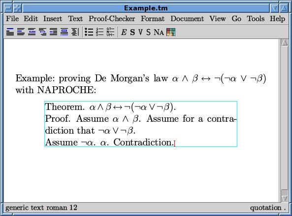
This is vindicated by the proof-checker:
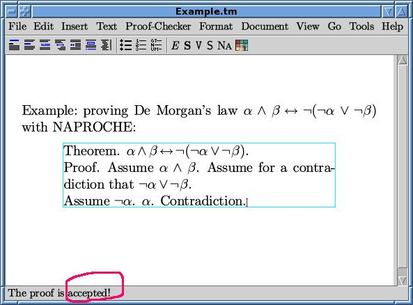
This means that the last assumption implies a contradiction. This conclusion is expressed by the keyword "Thus":
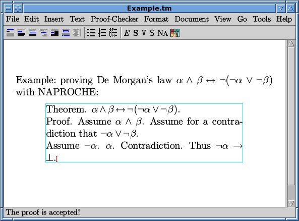
We proceed similarly for β:
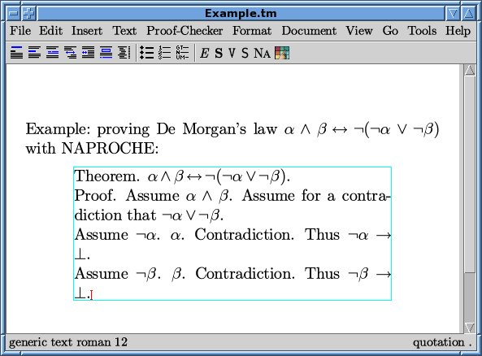
So each case of the disjunction ¬α∨¬β leads to a contradiction. So the converse ¬(¬α∨¬β) of the last open assumption holds. This consequence is also indicated by a "Thus".
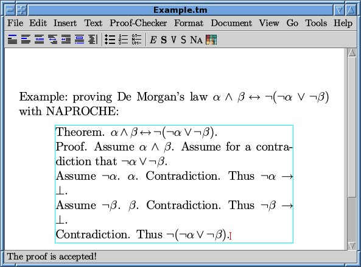
Another application of "Thus" shows the left-to-right direction of the equivalence.
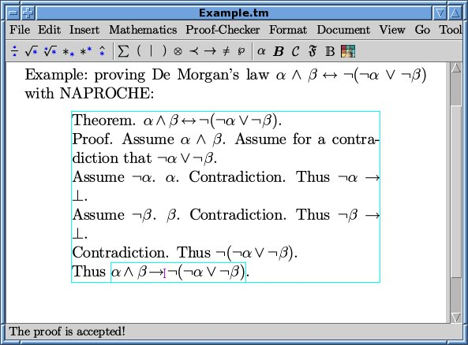
A "Qed." requires checking the last open theorem against the statements established so far. Since the left-to-right implication does not imply the equivalence, the proof ended by "Qed." at this point is rejected.
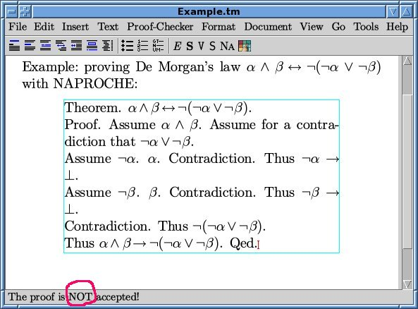
Thus we remove the "Qed." and start the converse direction:
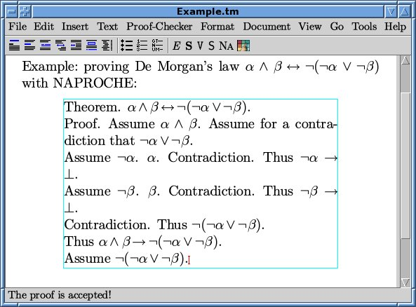
To prove α∧β from this assumption, one assumes ¬α and uses rules of ∨-introduction and contradiction. Similarly one obtains β.
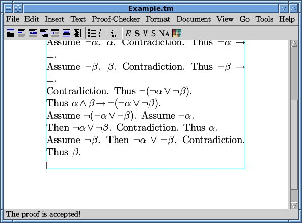
α and β may be conjoined by ∧-introduction, and one gets the right-to-left implication.
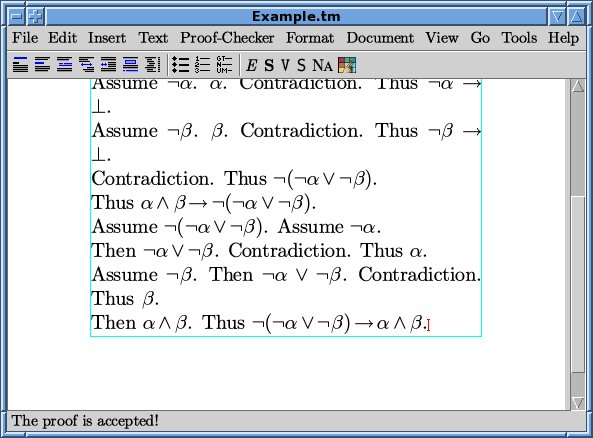
Now we can close the proof by "Qed." since → and ← imply ↔︎.
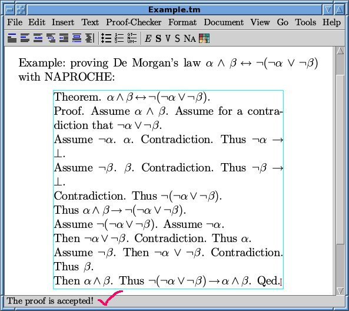